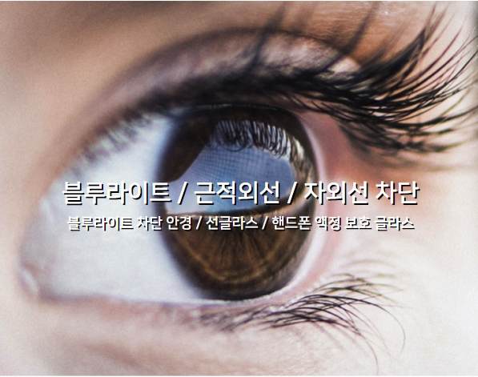

The K-film has a own special coating and kfilm is specialized in the development and distribution of products needed in daily life.

The blue light is a blue light source of Ultraviolet rays(UV rays)that comes out from the monitor, TV, SmartPhone and other home appliances that cause retinal damage to humans' eyes.